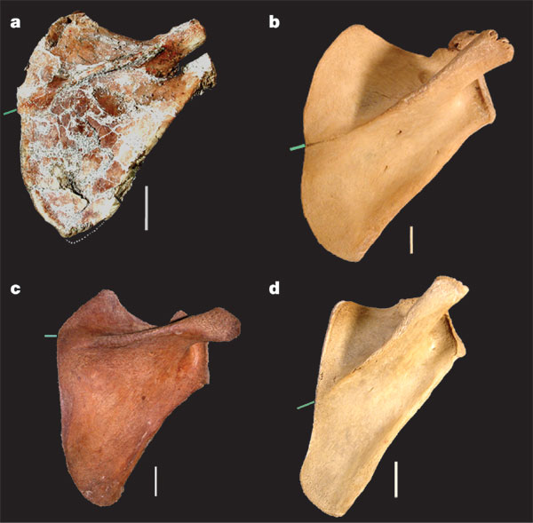
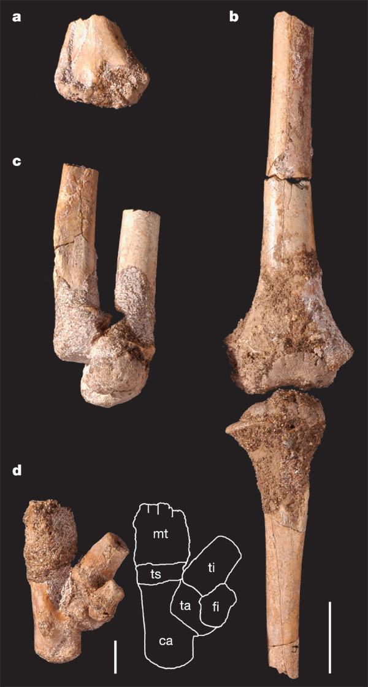
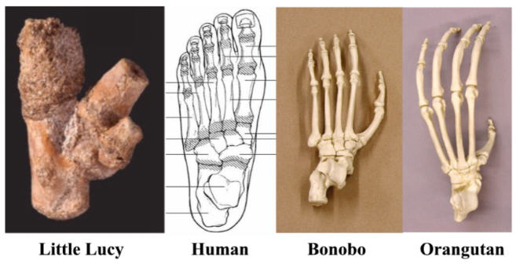
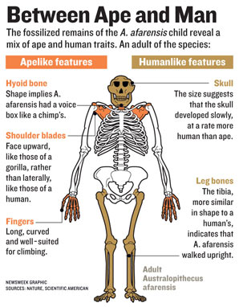

| Feature Article - October 2006 |
| by Do-While Jones |
A juvenile Australopithecus afarensis designated DIK-1-1 has been discovered in Ethiopia.
The best-known Australopithecus afarensis skeleton is A.L. 288-1, popularly called Lucy. Another A. afarensis skeleton, DIK-1-1, has just been described in the scientific literature. Since it is a female juvenile of Lucy's species, it has been called Lucy's daughter, despite the fact that Little Lucy supposedly lived 100,000 years before Lucy. Her official nickname is Selam, or "peace," in Amharic. We suspect this is in response to the war among evolutionists as to how to interpret hominids. For convenience, we will refer to DIK-1-1 as "Little Lucy."
There are really two stories. The first story is what they found. The second story is how the popular media reported it. The second story is more important, but let's start with the first story.
The abstract of the paper describing the find says,
|
The find includes many previously unknown skeletal elements from the Pliocene hominin record, including a hyoid bone that has a typical African ape morphology. The foot and other evidence from the lower limb provide clear evidence for bipedal locomotion, but the gorilla-like scapula and long and curved manual phalanges raise new questions about the importance of arboreal behaviour in the A. afarensis locomotor repertoire. 1 |
Thus, the abstract contains the first hints that A. afarensis might be more apelike than evolutionists would like.
The big news is that they have discovered a hyoid bone, which is associated with the ability to speak. The hyoid is much more apelike than human, so Little Lucy probably could not talk. Speech is a human characteristic.
|
The hyoid of DIK-1-1 is only the second example in the hominin fossil record, and this element was previously unknown for any species earlier than Neanderthals. Its similarities with Pan and Gorilla hyoids suggest that the bulla-shaped body is the primitive condition for African apes and humans, rather than the more shallow, bar-like body shown by modern humans and Pongo. The bulla-shaped body almost certainly reflects the presence of laryngeal air sacs characteristic of African apes. However, the function of these structures is not well understood. 2 |
They also discovered Little Lucy had a shoulder blade that looks more like a gorilla's than a human's.
|
The shape of the scapula [shoulder blade] resembles the scapulae of juvenile and adult gorillas (Fig. 5, Supplementary Note S6). In contrast, modern humans at a similar age have a wider infraspinous fossa [part of the shoulder blade] and a more laterally facing glenoid fossa [another part of the shoulder blade], with a correspondingly horizontal spine orientation, whereas chimpanzees tend to have a narrower infraspinous fossa and a more superiorly facing glenoid fossa with a corresponding spine orientation. DIK-1-1 does contrast with gorillas in its narrower supraspinous fossa [yet another part of the shoulder blade] and less inclined spine, and in these features it is intermediate between African apes and humans. Nevertheless, comparing supraspinous and infraspinous fossa breadths still groups DIK-1-1 more closely with gorilla than with modern humans (Supplementary Note S6e, h). These affinities are also shown in a principal components analysis of 11 linear morphometric measurements (Fig. 4b, Supplementary Note S6i).  3 |
Their picture compares the DIK-1-1 scapula (a) with gorilla (b), human (c), and chimp (d) scapulae.
The point they are making most strongly is that Little Lucy's shoulders are clearly designed for swinging from trees. If it normally swung from trees, it didn't normally walk upright on the ground.
Upright posture is vitally important to the evolutionists. They think that apes, which rarely walk upright, evolved into people, who rarely walk on all fours. So, upright posture is evidence of evolution to them. If Lucy and Little Lucy didn't walk upright, then there isn't really any evidence that they were human ancestors.
It has long been known that Australopithecus afarensis did not have the inner ears required to give them the balance needed to allow them to walk on two legs. Evolutionist Louis Leakey wrote,
|
Part of the anatomy of the inner ear are three C-shaped tubes, the semicircular canals. Arranged mutually perpendicular to each other, with two of the canals oriented vertically, the structure plays a key role in the maintenance of body balance. At a meeting of anthropologists in April 1994, Fred Spoor, of the University of Liverpool, described the semicircular canals in humans and apes. The two vertical canals are significantly enlarged in humans compared with those in apes, a difference Spoor interprets as an adaptation to the extra demands of upright balance in a bipedal species. What of early human species? Spoor's observations are truly startling. In all species of the genus Homo, the inner ear is indistinguishable from that of modern humans. Similarly, in all species of Australopithecus, the semicircular canals look like those of apes. 4 |
This new skeleton confirms
|
... the semicircular system in DIK-1-1 is similar to that of African apes and A. africanus (Supplementary Note 7), and this has been associated with limited head decoupling and absence of fast and agile bipedal gaits. 5 |
The semicircular system in Little Lucy's head is the kind that apes have, not humans. It is the kind of semicircular system that doesn't work well for walking upright. It is better suited for tree climbing.
Traditionally, brain size has been used to distinguish apes from humans. Humans have bigger brains. The size required to be human, however, is purely arbitrary. Here is a little history, written by a famous evolutionist, on how 600 cc became the dividing line between apes and humans.
|
... in order to assign the appellation Homo to the new fossil, Louis [Leakey] had to modify the accepted definition of the genus. Until that time, the standard definition, proposed by the British anthropologist Sir Arthur Kent, stated that the brain capacity of the genus Homo should equal or exceed 750 cubic centimeters, a figure intermediate between that of modern humans and apes; it had become known as the cerebral Rubicon. Despite the fact that the newly discovered fossil from Olduvai Gorge had a brain capacity of only 650 cubic centimeters, Louis judged it to be Homo because of its more humanlike (that is, less robust) cranium. He proposed shifting the cerebral Rubicon to 600 cubic centimeters, thereby admitting the new Olduvai hominid [Homo habilis] to the genus Homo. 6 |
Apparently, if the rules are in your favor, then rules are important. But, if the rules are against you (and your name is Leakey), you can change them.
The discovery of some small modern humans, Homo floresiensis, two years ago 7 has caused the evolutionists more trouble because their brains were only 380 cubic centimeters 8; but these creatures were obviously human.
Since they can't rely on brain size anymore, evolutionists are trying to use the rate of brain development as a way to distinguish man from apes. Evolutionists are excited about the discovery of a juvenile A. afarensis because it allows them to determine how fast the brain develops in this species by comparing it to the brain of an adult. Here's what they found.
|
Preliminary volume measurements of the preserved endocast of DIK-1-1 from CT scans yield a value of 235 cm3. However, this endocranial volume (EV) underestimates the true value because of the minor deformation of the occipital region, and a few areas of the cranial base where the bone-matrix interface is unclear. To provide an alternative estimate, we calculated the correlation between the EV and the combined endocranial breadth and midsagittal arc for an ontogenetic series of Pan troglodytes and Gorilla gorilla. Using the regression equations, the EV of DIK-1-1 was estimated as 275 to 330 cm3 (Supplementary Note S3). This is not unlike the volume evident in P. troglodytes of a comparable dental age of three years (Supplementary Note S4a). DIK-1-1 would have completed between 65 and 88 per cent of an average EV of 375 to 425 cm3 estimated for adult female A. afarensis. This proportional endocranial volume, and that of A.L. 333-105, overlaps with the range of variation of both modern humans and African apes (Supplementary Note S4b). 9 |
In plain English, Little Lucy apparently was 3 years old when she died. The brains of juveniles are smaller than the brains of adults. If you compare the size of Little Lucy's brain to Lucy's brain, it is proportionately the same as if you compare the brain of a 3 year-old chimpanzee (P. troglodytes) to an adult chimpanzee. Therefore, her brain was developing at the same rate as a chimpanzee. But, the variation in the size of a 3 year-old brain to an adult brain in both apes and humans varies enough that Little Lucy's brain size at her age was normal for either an ape or a human. Therefore, the rate of her brain development doesn't prove anything one way or the other.
Later in the article they came right out and said,
|
Brain growth in DIK-1-1--expressed as the percentage of mean adult EV completed--is at a developmental stage when the patterns of African apes and modern humans overlap substantially and, consequently, the fossil cannot be grouped specifically with either (Supplementary Note S4b). 10 |
Remember this when we examine what Newsweek had to say about brain development.
So far, there hasn't been any evidence that Australopithecus afarensis was anything other than an ape. Their skulls, inner ears, upper bodies, and hyoid bone were apelike.
Did it walk like an ape or a human? If their hips and feet were ape-like, then it is unreasonable to consider Lucy's species to be anything other than an ape, with no connection to humans at all.
Previously, the evidence that Lucy walked upright was very weak. Some human footprints were found in rocks that were believed (by evolutionists) to have been formed at the time when Lucy lived. Since these footprints were far too old (they think) to have been made by modern humans, they must have been made by the most human-like creature that existed back then. That creature must have been Australopithecus afarensis, according to their age estimates. They reject the obvious conclusion that the footprints were actually made by modern humans because of their prejudice about the age of the rocks, and the presumed timeline of human evolution.
Initial examination of Lucy's pelvis showed that Lucy could not have walked upright easily. Since the evidence didn't fit the prejudice, they simply changed the evidence. According to the famous evolutionist, Donald Johanson,
|
Part of the Stony Brook group's contention that afarensis was not an efficient biped relied on measurements taken from a cast of Lucy's unrestored pelvis. They did not take into account the damage and distortion that occurred while the bones were buried, and an artificial joint had formed between the sacrum and the ilium that misled the team to conclude that Lucy's pelvis looked more chimplike because the ilium did not curve forward as it did in humans. Using casts of Lucy's pelvis made before and after his restoration, Owen demonstrated that connecting the sacrum to the false joint in the unreconstructed pelvis pulls the pubis--the bone at the front of the pelvis--two inches to the side of the body's midline, an incorrect position. After he had restored the pelvis, Owen realized that the joint between the ilium and the sacrum had twisted 90 degrees. Correcting for this damage, he could attach the sacrum to the real joint in the ilium, which swung the pubis back to its proper position in the middle of the body and also brought the ilium into its natural position, which resembles a human pelvis. 11 |
So, simply changing the joint a mere 90 degrees proved that Lucy walked upright!
Imagine a prosecutor introducing airplane tickets into evidence showing that the defendant flew to New York on the day of the crime, then arguing that the tickets must be wrong because the crime was committed in San Francisco, then using the tickets as evidence that the defendant was in San Francisco!
That's what they have tried to do with Lucy's pelvis. They decided that her pelvis must have been distorted during burial. Therefore, her pelvis was reshaped to support the conclusion they had already reached--that she walked upright. Then the reshaped pelvis was used as proof that their previous conclusion was correct.
They would have loved to have found Little Lucy's pelvis to prove that the reshaped pelvis was, in fact, correct. But, they didn't find her pelvis. Furthermore, they didn't find any toe bones that would have shown if her toes were long and curved, or short enough to have made the Laitloi footprints. The photograph shows the bones they found below the waist. There isn't a lot to go on. That's why there is only one paragraph about the bones below the waist in the entire article. Here is all they have to say about them.
|
 Most bipedal features seen in A. afarensis specimens are observed on the lower limb and foot of DIK-1-1 (ref. 21). Overall, the tibiae--with their transversely expanded shaft beneath the tibial plateau--are similar to that of the juvenile A.L. 333-39 (ref. 22), but have a sharper anterior border also shown by modern humans (Fig. 2b). As in modern humans, the tibialis anterior muscle originated anterior to the interosseous ridge and occupied the lateral side of the tibial shaft, extending the sharp anterior border. The tibialis posterior muscle occupied the lateral aspect of the posterior part of the shaft. Similar to humans, the lateral upper part of the shaft is rather concave, particularly just below the condyles, and becomes convex more distally. Also, the cross-section of the shaft changes from triangular proximally to oval at its distal-most preserved part. The bicondylar angle and symmetrical condyles are additional features previously known in A. afarensis. The medial and lateral borders of the talar trochlea are similar in curvature and height (Fig. 2d), and the partly exposed medial side of the talar body is vertical in surface orientation (Fig. 2d). The calcaneus of DIK-1-1 is robust, as in humans, and its distal part is mediolaterally wider in relation to its dorsoplantar dimension compared with that of Pan. 12 |
In other words, there is nothing really new. They have "features previously known in A. afarensis."
The caption for the figure says bone (d) in the picture above is the "Left foot and its outline including metatarsals (mt), distal tibia (ti), distal fibula (fi), talus (ta), calcaneus (ca) and tarsals (ts)." The foot bone didn't look very human to us, so we looked on the Internet to see what human and ape foot bones look like.

We don't claim to be experts in foot anatomy, so we will leave it to you to compare Little Lucy's foot with the human foot 13, the bonobo foot 14 and the orangutan foot 15.
The mainstream opinion is that A. afarensis was bipedal because that's the only thing that makes it even remotely human. Little Lucy's leg bones aren't any different than other Australopithecus afarensis leg bones, so they don't have any justification for saying that their bones contradict the traditional interpretation; but they do recognize there are serious problems with the traditional interpretation.
|
The DIK-1-1 skeleton confirms the functional dichotomy of the body plan of A. afarensis: a more derived lower body adapted for bipedal locomotion, combined with an upper body that is, in many respects, ape-like. The functional interpretation of these features is highly debated, with some arguing that the upper limb features are non-functional retentions from a common ancestor only, whereas others propose that they were preserved because A. afarensis maintained, to some degree, an arboreal component in its locomotor repertoire. Now that the scapula of this species can be examined in full for the first time, it is unexpected to find the strongest similarities with Gorilla, an animal in which weight-bearing and terrestrial knuckle-walking predominately characterize locomotor use of the forelimbs. Problematic in the interpretation of these findings is that the diversity of scapula architecture among hominoid species is poorly understood from a functional perspective. 16 |
There is a "functional dichotomy" (i.e. fundamental contradiction) in the conventional interpretation of Australopithecus afarensis' skeleton. If the interpretation of the lower part is correct, it walked on two feet. If the interpretation of the upper part is correct, it swung from trees.
The scapula was previously unknown, but now that it has been found, it "unexpectedly" was clearly most like a gorilla, which doesn't normally walk upright.
In summary, all the new evidence shows A. afarensis more apelike than humanlike--but that's not how it was generally reported.
Scientists never refer to a baby bird, or a baby monkey, or any kind of baby animal as a child. They use the term, "juvenile." That's the term used in the Nature article that described the discovery.
The term "child" is reserved for juvenile humans. The popular press called Little Lucy, "Lucy's child" or "Lucy's daughter." It is a subtle way of making her more human.
|
Newsweek desperately wants Little Lucy to be a missing link, so they printed the misleading graphic at the right. 17 They got all the apelike features correct, but they distorted the supposed human features. The skull was the size and shape of an ape's skull. So, they had to cling to the notion that the rate at which it developed was humanlike. Remember that the researchers said that the brain growth rate was most like that of a gorilla, but that growth rates are too similar to be conclusive. Newsweek said Little Lucy had human-like rate of brain growth, and cited it as evidence of humanity. The graphic makes it appear that all of Little Lucy's leg and foot bones were found, and that they show that Little Lucy walked upright. Few readers will notice that the fine print says that the bones are from an adult Australopithecus afarensis. The graphic implies all the leg and foot bones have been discovered intact, which is not true. |
 |
The article says,
|
So far, Selam has mostly confirmed what scientists already suspected: her species walked upright, with a mosaic of proto-human and proto-ape traits. But she has also kicked off a few arguments. Her discoverers point to her shoulder blade and curved fingers as evidence that she often climbed trees. White, on the other hand, says, "There's been substantial arm-waving about that." He thinks the traits are evolutionary leftovers from Lucy's tree-dwelling ancestors, not yet replaced by natural selection. 18 |
But the discovery did NOT confirm that she walked upright. Little Lucy had a shoulder like that of a tree-swinging, knuckle-walking ape.
Newsweek admits the evidence shows "she often climbed trees." But since that undermines their belief, they immediately bring in a quote from Tim White, a paleoanthropologist at Berkeley, to dispute the evidence that she often climbed trees.
The upright walking argument is bogus, anyway. When I was a boy, I taught my dog to walk on his hind legs a few steps to get a treat. Perhaps, if I had been more diligent, I could have taught him to walk on his hind legs most of the time. It is unlikely, to be sure, but for the sake of discussion let us suppose I did it. Any puppies my dog would have had would be no more able to walk on two legs than any other puppies of the same breed. Learned behaviors don't produce inheritable changes. But, just for the sake of discussion, suppose that all the puppies did walk on their hind legs. There is no reason to believe that walking upright would have led to more complex social behavior and tool making, which would have stimulated brain activity, resulting in larger brains, less fur, and lighter skin. So why would one believe that if apes walked upright it would cause them to evolve into people?
| Quick links to | |
|---|---|
| Science Against Evolution Home Page |
Back issues of Disclosure (our newsletter) |
| Web Site of the Month |
Topical Index |
Footnotes:
1
Alemseged, et al., Nature 443, 21 September 2006, "A juvenile early hominin skeleton from Dikika, Ethiopia", pages 296-301 https://www.nature.com/articles/nature05047
2
ibid.
3
ibid.
4
Leakey, The Origin of Humankind, 1994, page 35
5
Alemseged, et al., Nature 443, 21 September 2006, "A juvenile early hominin skeleton from Dikika, Ethiopia", pages 296-301 https://www.nature.com/articles/nature05047
6
Leakey, The Origin of Humankind, 1994, page 35
7
Disclosure, November 2004, "Homo floresiensis"
8
Brown, et al., Nature 431, 28 October 2004, "A new small-bodied hominin from the Late Pleistocene of Flores, Indonesia", page 1057 https://www.nature.com/articles/nature02999
9
Alemseged, et al., Nature 443, 21 September 2006, "A juvenile early hominin skeleton from Dikika, Ethiopia", pages 296-301 https://www.nature.com/articles/nature05047
10
ibid.
11
Johanson, et al., Ancestors, 1994, pages 70-71
12
Alemseged, et al., Nature 443, 21 September 2006, "A juvenile early hominin skeleton from Dikika, Ethiopia", pages 296-301 https://www.nature.com/articles/nature05047
13
http://www.footmaxx.com/clinicians/bones.html
14
http://www.boneclones.com/KO-125.htm
15
http://www.boneclones.com/KO-204.htm
16
Alemseged, et al., Nature 443, 21 September 2006, "A juvenile early hominin skeleton from Dikika, Ethiopia", pages 296-301 https://www.nature.com/articles/nature05047
17
Newsweek, 2 October 2006, "They Call Her 'Lucy's Daughter'", page 42
18
ibid.